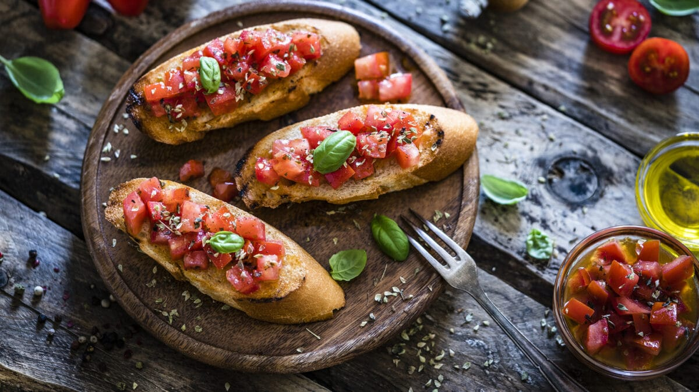

Bruschetta

Bruschetta with Tomate and Basil
Use any flavorful, ripe tomato for this recipe. If you use cherry tomatoes,
just quarter them, don't bother blanching or peeling them
To thinly slice basil leaves, stack the leaves on top of each other and roll up like a cigar.
Then make thin slices from one end of the basil cigar to the other.
Ingredients
- 6 - 7 ripe tomatoes
- 2 cloves garlic, minced
- 1 tablespoon extra virgin olive oil
- 1 tablespoon balsamic vinegar
- 6 to 8 fresh basil leaves, thinly sliced or chopped
- 3/4 teaspoon sea salt, more or less to taste
- 1/2 teaspoon freshly ground black pepper, more or less to taste
- 1 baguette, French bread, or similar italian bread
- 1/4 cup olive oil
Steps